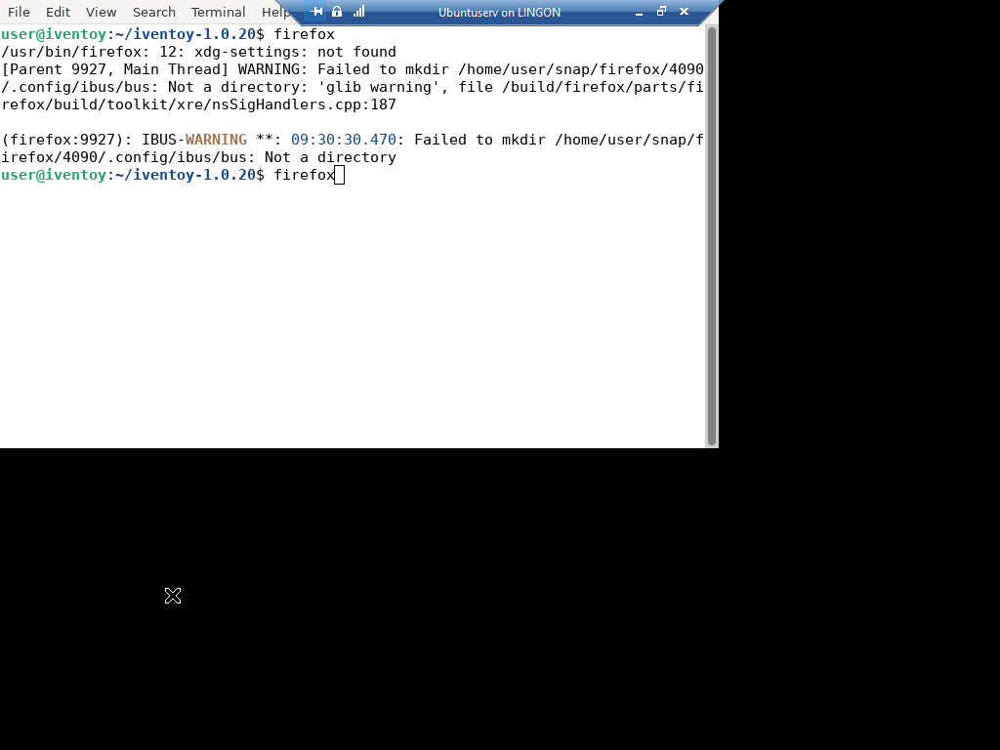
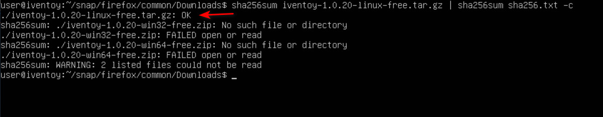
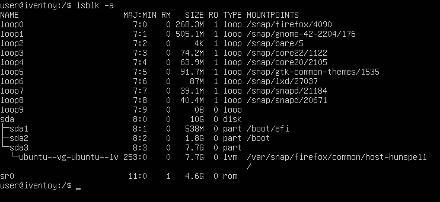
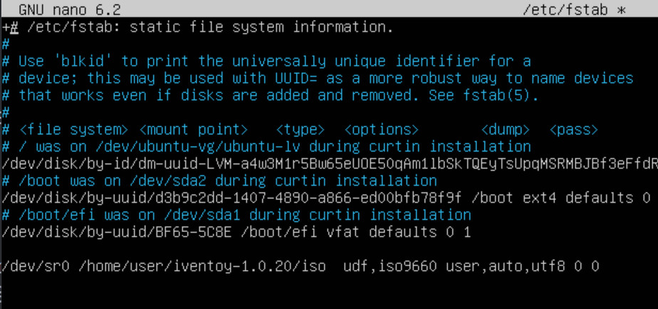

Ubuntu Server utan GUI (nästan)
- Installation av Ubuntu Server med terminal UI
- Installation av iVentoy
- Montera ISO
- Skapa en symbolisk länk
- Statisk IP
Installation av Ubuntu Server med terminal UI
tips
Om du inte har tidigare erfarenhet av Linux läs detta först.
Ladda ner Ubuntu Server 22.04.4 LTS och montera ISO:n i ett VM på Hyper-V som är minst 12 GB.
Ta bort bocken "Enable Secure Boot" på Security fliken och boota från DVD.
Tryck Enter under installation för att gå vidare. Navigera med Tab . Ändra inget förutom vid "Layout" till svenskt tangentbord.
Starta om efter installation och tryck Ctrl + D för att gå tillbaka till inloggningen om inte det sker automatiskt. Vid krångel tryck Ctrl + C. Börja med att mata in följande för att uppdatera systemet:
sudo apt-get update && sudo apt-get upgrade
notera
iVentoys grafiska gränssnitt kan nås via extern webbläsare. Programvara kan överföras via en ISO eller t.ex. SCP. Installering av Firefox & Xorg är valfritt då Ubuntu kan köras "headless".
Installation av Firefox & Xorg
iVentoy kräver en webbläsare för att kunna ändra inställningar så mata in följande i terminalfönstret för att installera Firefox med Xorg X display server:
sudo apt install firefox xorg
Starta Firefox genom att mata in startx (xorg) i terminalfönstret och sen firefox i nästa fönster:

Installation av iVentoy
När Firefox startat gå till https://github.com/ventoy/PXE/releases och ladda ner senaste Linux-versionen och filen "sha256.txt".
För att avsluta Firefox tryck Ctrl + Q och skriv sedan exit i nästa fönster för att avsluta (xorg).
Från terminalfönstret laddar man ner med:
wget https://github.com/ventoy/PXE/releases/download/v1.0.20/iventoy-1.0.20-linux-free.tar.gz
Textfil:
wget https://github.com/ventoy/PXE/releases/download/v1.0.20/sha256.txt
Github kan krångla men då funkar curl:
curl -O https://github.com/ventoy/PXE/releases/download/v1.0.20/iventoy-1.0.20-linux-free.tar.gz
Textfil:
curl -O https://github.com/ventoy/PXE/releases/download/v1.0.20/sha256.txt
Filerna hamnar i mappen man är i. Om curl inte är installerad, installera med sudo apt install curl.
Navigera till hemmappen med cd. Mata först in cd /snap/firefox/common/Downloads, eller annan mapp om man använt curl, och sen följande kommandorad för att jämföra genererad sha256 med den som finns i textfilen:
sha256sum iventoy-1.0.20-linux-free.tar.gz | sha256sum sha256.txt -c

Det finns tre kontrollsummor i sha256.txt filen men endast Linux-versionen kan jämföras. Kolla så att det står "OK" vid Linux-versionen. Packa upp arkivet till user-mappen genom att mata in:
tar -xf iventoy-1.0.20-linux-free.tar.gz /home/user
tips
Ubuntu Server har ingen “scrollback buffer”. För att kunna se stora textflöden får man köra en pipe.
Exempel: tar --help | less. Piltangent ned kör en rad åt gången och mellanslag kör en sida. Avsluta genom att trycka Q.
Montera ISO
Använd Imgburn (Windows) för att skapa en ISO-fil av Windows 10 ISO och eventuell autounattend.xml och anslut den till Ubuntu Server VM:et i Hyper-V.

Mata in lsblk -a för att lista alla "block size" enheter. "sr0" är den optiska enheten listad som "rom" men är ej monterad.
Mata in sudo mount /dev/sr0 /home/user/iventoy-1.0.20/iso/ för att montera den optiska enheten i iVentoys iso-mapp. Om ISO:n tas bort eller VM:et startas om måste mount köras igen. För att råda bot på detta konfigurerar man enligt följande:
sudo chown -R $USER:$USER /home/user/iventoy-1.0.20/iso
Ägarskap över mappen och dess undermappar flyttas nu till användaren (Kontrollera så att sökvägen är rätt beroende på vilka steg du följt ovan). Autostart konfigureras så här:
sudo nano /etc/fstab

Lägg till följande rad längst ner:
/dev/sr0 /home/user/iventoy-1.0.20/iso udf,iso9660 user,utf8 0 0
Spara med Ctrl + S och stäng fönstret med Ctrl + X. Den optiska enheten monteras nu automatiskt vid uppstart i iVentoys iso-mapp.
Kopiera eventuell autounattend.xml-fil till iVentoys skriptmapp:
cp /home/user/iventoy-1.0.20/iso/autounattend.xml /home/user/iventoy-1.0.20/user/scripts/
Skapa en symbolisk länk
Om man monterar den virtuella optiska enheten på en annan plats som exempelvis /mnt/dvd/ så kan man göra en symlink så att den läses från en annan mapp. I exemplet nedan har en ISO-fil på den optiska virtuella enheten länkats till iVentoys iso-mapp.
ln -s /mnt/dvd/Windows10.iso /home/user/iventoy-1.0.20/iso/Windows10.iso
Detta skapar en sym link i iVentoys "iso"-mapp. Växeln -s står för symbolic.
Statisk IP
Navigera till /etc/netplan/. Mata sen in sudo nano och tryck Tab två gånger och sen Enter för att öppna .yaml-filen i Nano.

Redigera filen så att den ser ut som ovan. Fyll i eget IP-nummer etc. Var noga med blankstegen. Spara med Ctrl + S och stäng med Ctrl + X. Testa om inställningarna och formateringen är korrekt med sudo netplan try.

Om det ser ut som ovan så tryck Enter. Varningsmeddelandet kan ignoreras.
iVentoy startas med sudo bash iventoy.sh start alternativt sudo ./iventoy.sh start. Klicka för fler val och inställningar